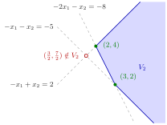

Extreme Points of a Polyhedral Set¶
Proposition¶
Let with , let have rows , let , and let be the corresponding polyhedral convex set. A point is an extreme point of if and only if there are row indices such that is the unique solution of the system
Equivalently, with the binding index set at and the matrix of the binding rows, is extreme if and only if .
Consequently, the profile of every polyhedral convex set is either empty or finite.
Interpretation¶
The proposition turns extreme points into linear algebra: a point of a polyhedral set is a corner exactly when of the boundary hyperplanes through it are independent, so that they meet in that single point.

The figure draws the set of Example 2. Any two of its three boundary lines have independent normal vectors, so each pair meets in exactly one point. At and (green) two independent constraints bind and the point lies in , so these are the extreme points. The third intersection (open red circle) also solves two independent equations, but it violates and lies outside , so it is not an extreme point.
If the binding rows at have rank less than , there is a direction with for all binding ; moving a little to keeps the binding constraints at equality and the others strict, so is the midpoint of a segment in . Conversely, if lay strictly inside a segment in , each of the binding inequalities would have to hold with equality at both end points, and the end points would be further solutions of the system.
The point must lie in : independent equations always have a unique solution, but it may violate another inequality, like in Example 1. More than inequalities may bind at an extreme point; only the rank counts. Since each extreme point is the unique solution of some choice of rows out of , there are at most of them.
This is the algebra behind the corner points of OR Modelling and the binding constraints of Math IV, using the binding index set from the normal cone of a polyhedral set. A common mistake is to call every intersection of boundary lines a corner of the region; in linear programming every such intersection is called a corner point, and only the feasible ones are extreme points.
Key Results¶
- For with : is extreme if and only if is the unique solution of of the equations .
- Equivalently, is extreme if and only if the binding rows at have rank .
- The profile of a polyhedral convex set is empty or consists of finitely many points; for inequalities in there are at most extreme points.
- If , then no point has independent binding rows, so .
- A solution of independent equations that lies outside is not an extreme point (Example 1 below).
Examples¶
1. Two extreme points of an unbounded set. Let . The three pairs of boundary lines give:
- and : solution , which satisfies (the left-hand side is ), so it is an extreme point;
- and : solution , which violates because , so it is not in ;
- and : solution , which satisfies (the left-hand side is ), so it is an extreme point.
Hence . The set is unbounded (it contains for all ), and the segment between the two extreme points is a proper subset of .
2. The set . Let . The first two boundary lines meet at , which satisfies the third inequality because ; the first and third meet at , which violates the second inequality because ; the last two meet at , which satisfies the first inequality because . So .
3. A point in . Let
Then , so and . These four rows have rank , so is an extreme point; here . Checking the other four-row subsystems, the ones containing rows , and are singular, because row equals row plus row , and the systems from rows and have the solutions and , which violate rows and respectively (). Hence .
4. A strip without corners. Let , the vertical strip . Both rows are multiples of , so and no point has two independent binding rows. Indeed every is the midpoint of and , and : the empty case of the last statement of the proposition.
Prerequisites¶
Related Concepts¶
- Convex Hull of Extreme Points
- Extreme Points on a Supporting Hyperplane
- Adjacent Corner Points
- Optima at Extreme Points
- Corner Point
- Binding and Nonbinding Constraints
Sources¶
- Math VI: Convexity and Optimization · Week 3
- H. E. Nusse and M. Dienstknecht, Math VI: Convexity and Optimization, lecture notes 2026–2027, Section 3.1
Aliases: vertices of a polyhedron, extreme points of Ax ≤ b, rank test for extreme points, profile of a polyhedral set Keywords: \boldsymbol{A}\boldsymbol{x}\leq\boldsymbol{b}, \boldsymbol{a}{r_j}^{\top}\boldsymbol{x}=b, n binding equations with a unique solution, finitely many extreme points Symbols: element of, epsilon, natural numbers, real numbers }, \operatorname{rank}(\boldsymbol{A}_{I(\boldsymbol{p})})=n, \binom{m}{n
Last updated: 5 November 2026 12:47
Extreme Points of a Polyhedral SetAdjacent Corner PointsOptima at Extreme PointsExtreme PointPolyhedral Convex SetNormal Cone of a Polyhedral SetRankSystem of Linear EquationsConvex Hull of Extreme PointsExtreme Points on a Supporting HyperplaneCorner PointBinding and Nonbinding Constraints